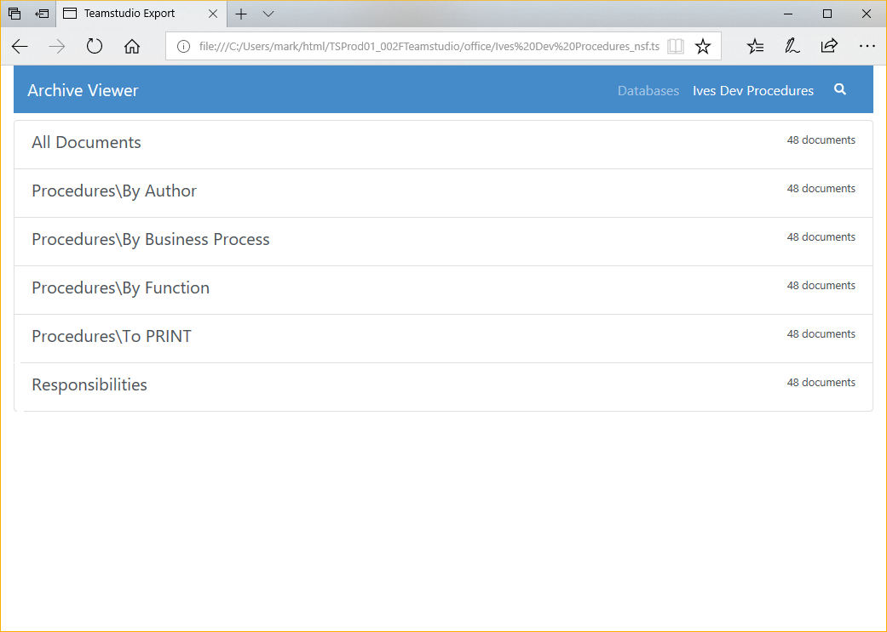
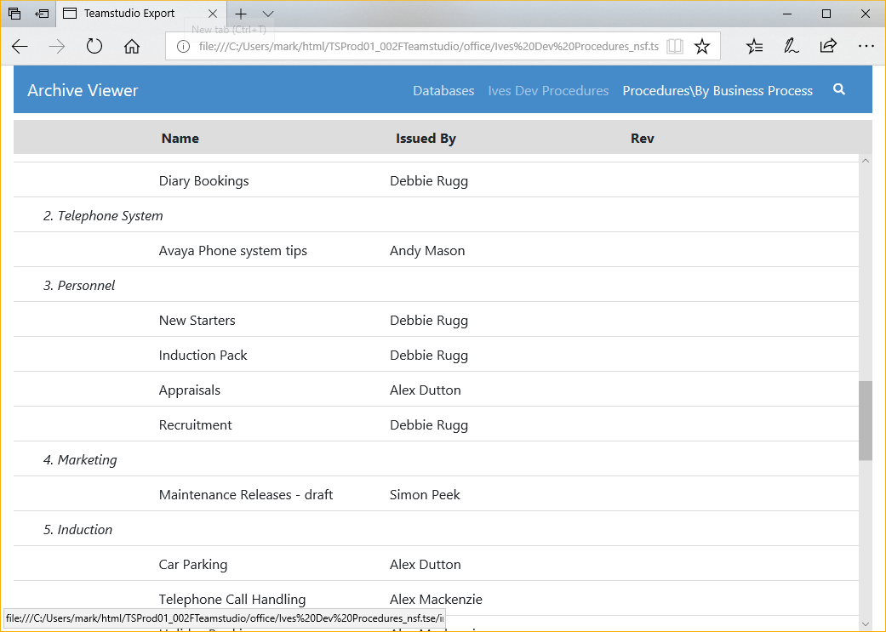
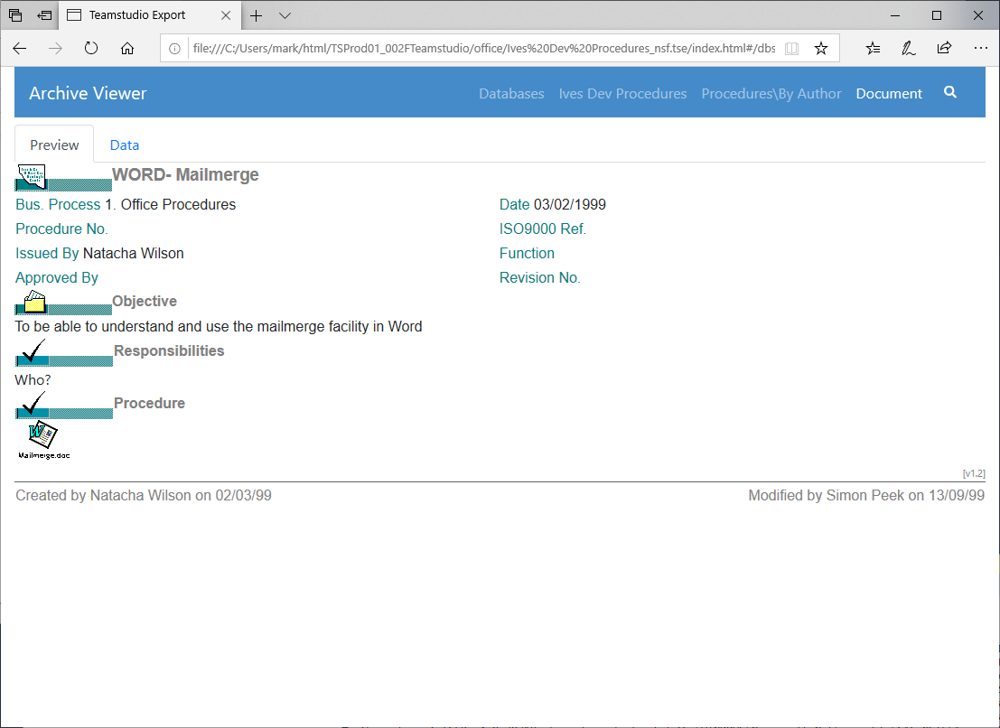

HTMLへのエクスポート
Teamstudio Export はアーカイブから静的な HTML サイトを生成することができます。この HTML サイトはカテゴリービューを含むデータベース内の全てのビューを文書ビュアーでビューに相当する画面として表示しています。文書ビュアーは元々ある Notes アプリケーションの見た目を再現するのではなく、効果的な別の方法でデータを表示します。ほとんどの場合、アーカイブされたデータから有用な情報を取り出すにはこの方法で十分です。
HTML サイトの生成
アーカイブを HTML にエクスポートするには、メイン画面からエクスポートするデータベースを選択し、選択したデータベースの一つを右クリックし、コンテキストメニューから「HTML にエクスポート」を選択します。標準的な Windows の操作と同様に、Ctrl キーを押しながらクリックしてデータベースの範囲を選択し、 Alt キーを押しながら選択項目にデータベースを追加することもできます。追加する前に既存のアーカイブ操作が完了するのを待つ必要はありませんが、エクスポートは最大3つのタスクを一度に実行し、それ以外のタスクは既存のタスクが完了するまで待機状態になります。
進行状況ウィンドウから、進行中または待機状態にあるアーカイブのタスクの状況を確認することができます。エクスポート中に発生したエラーや警告を処理する方法については、上記のリンクページを参照してください。
Note
HTML サイトは、設定で指定された HTML 出力フォルダ内に生成されます。HTML サイトはそのまま動作が可能で、実行の際ランタイム等の必要はありません。またサイトフォルダをファイルシステム上の別の場所またはWebサーバーにコピーして、最新のブラウザで表示させることができます。サイトを作成するには Teamstudio Export のライセンスが必要ですが、生成されたサイトを配布および表示するだけなら継続的なライセンスも実行時の費用も必要ありません。
HTML サイトの表示
アーカイブを HTML にエクスポートしたら、メイン画面からデータベースを右クリックし、コンテキストメニューから「HTML の表示」を選択してサイトを表示させることができます。このプロセスによりデフォルトブラウザでサイトのホームページが表示されます。

データベースをクリックすると、データベース内のビューのリストと、各ビューの文書数が表示されます。

ビューをクリックすると、ビューに相当する画面が表示されます。元々ある Notes ビューの外観と完全に一致はしませんが、ほとんどが元のフォーマットと一致し、すべてのデータを含みます。

ビュー内の文書をクリックすると、その文書に相当する画面が表示されます。デフォルトでは文書のプリビューが選択され Notes クライアントで表示される内容と同等のものが表示されます。

このプリビュー表示ではオリジナルのフォーム設計が無かったり Export がサポートしないプロパティに依存している場合には役に立たない可能性があります。このような場合には、スクリーン上部の Data タブを選択し文書内のアイテムすべての一覧表示形式で確認することもできます。

文書リンク
データベース毎に文書リンクがサポートされています。対象となるデータベースがアーカイブされている限り、データベース間の文書リンクもサポートされています。もちろん対象となるデータベースは、文書リンクが正しく機能するためにHTMLにエクスポートする必要はありますが、対象となるデータベースのアーカイブが存在する限り、文書リンクは作成されます。
Note
文書リンクを含むデータベースのグループがある場合、それらのいずれかをHTMLにエクスポートする前に、全てのデータベースをアーカイブする必要があります。このプロセスにより、全ての文書リンクが適切にエクスポートされます。
プリビュー表示の制限
Export の文書プリビュー表示は Notes フォームを表示するのに必要なほとんどのプロパティを理解し動作します。しかしながらサポートされない主な機能は以下のとおりです
- フォームで使用されていたりフィールドから起動される LotusScript、JavaScript、エージェント
- 通常 Notes で提供されるコンテキストが必要となる関数。例えば、現在のユーザー名やロールのようなそれに関連するプロパティ類
- 他の文書のデータにアクセスする @GetDocField や @DbLookup/@DbColumn
- 読み取り専用以外で使用する @SetField のような関数
- アクション
- レイアウト領域
- 埋め込みのコントロール群
- OLE オブジェクト
Export はリッチテキストを HTML へ変換し、@関数言語のサブセットを処理し文書プリビューを生成します。プリビューには計算結果の値や非表示式の計算も可能な限り遵守しています。Export の新リリースでは頻繁に @関数 のサポートとレンダリングに関する改善を行っています。Export はアプリケーションのアーカイブから HTML を再生成することでこれらの改善を組み入れることができるようになっています。オリジナルの Notes アプリケーションにアクセスする必要はありません。実装されていない @関数およびレンダリングに関する問題がありましたら調査のために techsupport_japan@teamstudio.com までご連絡ください。
一般的な HTML に関する制限
Export はアーカイブしたアプリケーションを読み取り専用のデータの表示を簡単にできるようデザインされた HTML サイトを生成します。ビューと文書にのみフォーカスしており、ユーザーがこれまで慣れ親しんだやり方で文書を見つけアクセスできる方法を提供しつつ、Notes フォームに表示されるのと同等の内容を表示しています。しかしながら、 Export ではナビゲーター、アウトライン、フレームセット、ページ、エージェント、スクリプトライブラリーのような他の設計要素の代わりとなるいかなる HTML も生成しません。
全文検索
Export 2.0 以降で HTMLに出力されたデータベースに対して全文検索が可能になりました。全文検索を開始するには、検索するビューを選択し、虫眼鏡をクリックして検索ボックスを表示させます。そして Enter キーを押すと検索が実行されます。この検索により、ビュー内の全ての検索条件に一致する全ての文書が表示されます。検索結果の表示順序はデータベースの文書に含まれる検索ワードの一致数との頻度、その一致度合いに基づいて出力されます。例えば、データベースで数回しか表示されない検索ワードを一致させることは、「the」のような一般的なワードと一致するよりも一致度合いが強いということになります。
全文索引には、テキストおよびリッチテキストのフィールドにある 2 つ以上の文字の全ての単語が含まれています。単語の最初で見つかったもののみを検索します。例えば、「at」で検索すると、「attach」は検索しますが、「cat」は検索にヒットしません。
Export 3.1 以降、索引の数値および文字列も、少なくとも2 文字が必要となります。生成される索引は一般的な単語としての区切りが用いられていることに注意が必要です。345678 のような注文番号などは連続した番号のセットとしてもちろん検索がサポートされていますが、03/04/1999 のような検索は、どういう形式であれ、日付値としてフォーマットされているかに関係なく、03、04、および 1999 で始まる個々のトークンを持つ文書がヒットします。
検索の索引には添付ファイル内のテキストは含まれていません。
Note
Export 3.2 で Export の環境設定内に日本語のコンテンツに対する検索を調整するこのオプションを導入しました。日本語の表意文字用に調整したトークナイザーを使用して検索索引を作成します。この設定を有効にし、HTMLに再出力すると検索索引が更新されます。